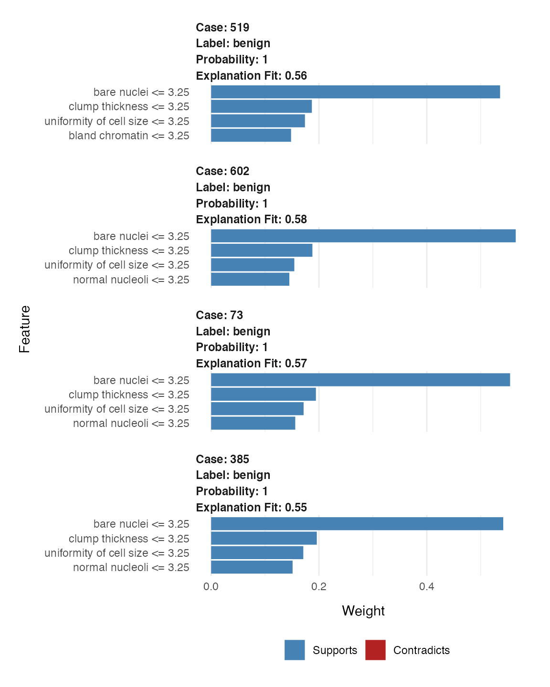
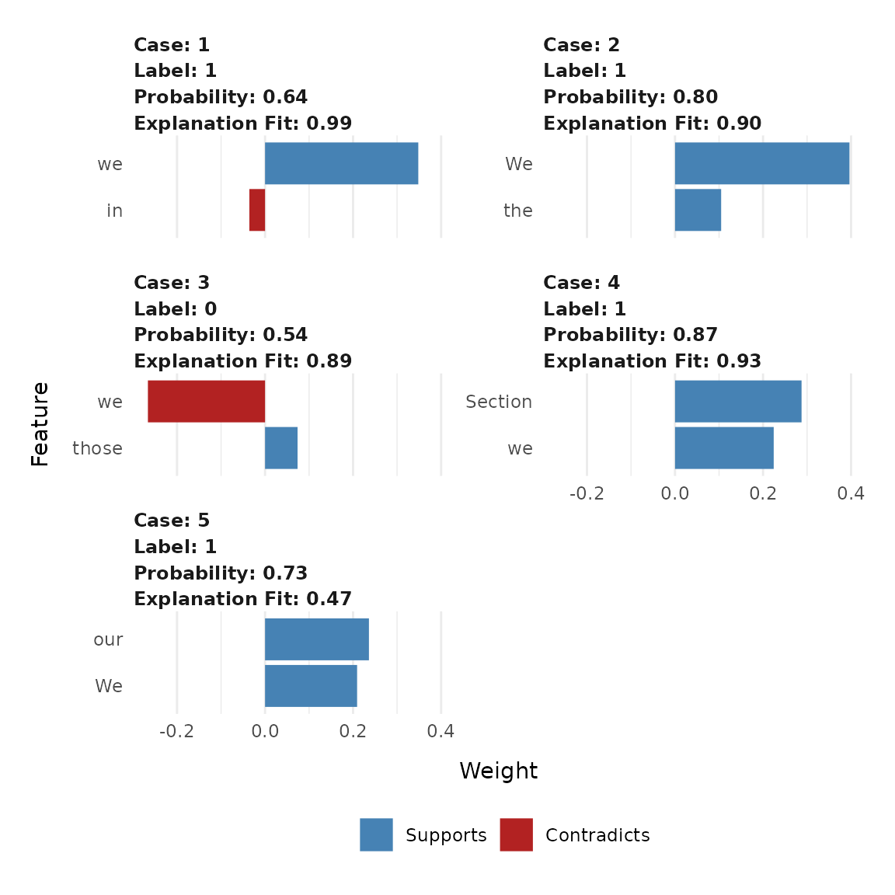

Understanding lime
Thomas Lin Pedersen & Michaël Benesty
2022-08-19
Source:vignettes/Understanding_lime.Rmd
Understanding_lime.RmdIn order to be able to understand the explanations produced by lime it is necessary to have at least some knowledge of how these explanations are achieved. To this end, you are encouraged to read through the article that introduced the lime framework as well as the additional resources linked to from the original Python repository. This vignette will provide an overview to allow you to get up to speed on the framework and let you efficiently understand the output it produces.
How lime explains stuff
Behind the workings of lime lies the (big) assumption that every complex model is linear on a local scale. While this is not justified in the paper it is not difficult to convince yourself that this is generally sound — you usually expect two very similar observations to behave predictably even in a complex model. lime then takes this assumption to its natural conclusion by asserting that it is possible to fit a simple model around a single observation that will mimic how the global model behaves at that locality. The simple model can then be used to explain the predictions of the more complex model locally.
The general approach lime takes to achieving this goal is as follows:
- For each prediction to explain, permute the observation
ntimes. - Let the complex model predict the outcome of all permuted observations.
- Calculate the distance from all permutations to the original observation.
- Convert the distance to a similarity score.
- Select
mfeatures best describing the complex model outcome from the permuted data. - Fit a simple model to the permuted data, explaining the complex model outcome with the
mfeatures from the permuted data weighted by its similarity to the original observation. - Extract the feature weights from the simple model and use these as explanations for the complex models local behavior.
It is clear from the above that there’s much wiggle-room in order to optimize the explanation. Chief among the choices that influence the quality of the explanation is how permutations are created, how permutation similarity is calculated, how, and how many, features are selected, and which model is used as the simple model. Some of these choices are hard-coded into lime, while others can be influenced by the user — all of them will be discussed below.
How to permute an observation
When it comes to permuting an observation, lime depends on the type of input data. Currently two types of inputs are supported: tabular and text
Tabular Data
When dealing with tabular data, the permutations are dependent on the training set. During the creation of the explainer the statistics for each variable are extracted and permutations are then sampled from the variable distributions. This means that permutations are in fact independent from the explained variable making the similarity computation even more important as this is the only thing establishing the locality of the analysis.
Text Data
When the outcome of text predictions are to be explained the permutations are performed by randomly removing words from the original observation. Depending on whether the model uses word location or not, words occurring multiple times will be removed one-by-one or as a whole.
Calculating similarities with permutations
Just as permutations are created differently based on the input data, so the similarities are calculated in different ways. For text data the cosine similarity measure is used, which is the standard in text analysis (it effectively measures the angle difference between the two feature vectors). For tabular data a bit more thought is required and the optimal solution will depend on the type of input data. First, the categorical features will be recoded based on whether or not they are equal to the observation. Second, if continuous features are binned (the default) these features will be recoded based on whether they are in the same bin as the observation. Using the recoded data the distance to the original observation is then calculated based on a user-chosen distance measure (euclidean by default), and converted to a similarity using an exponential kernel of a user defined width (defaults to 0.75 times the square root of the number of features).
Selecting the features to use
Feature selection is a complete sub-field of modelling in itself and lime has no silver bullet for this. Instead, it implements a range of different feature selection approaches that the user is free to choose from. First though, the number of features needs to be chosen. The number must strike a balance between the complexity of the model and the simplicity of the explanation, but try to keep it below 10 (personal opinion). As for selecting the features, lime supports the following algorithms:
- none: Use all features for the explanation. Not advised unless you have very few features.
- forward selection: Features are added one by one based on their improvements to a ridge regression fit of the complex model outcome.
-
highest weights: The
mfeatures with highest absolute weight in a ridge regression fit of the complex model outcome are chosen. -
lasso: The
mfeatures that are least prone to shrinkage based on the regularization path of a lasso fit of the complex model outcome is chosen. -
tree: A tree is fitted with
log2(m)splits, to use at maxmfeatures. It may possibly select less. -
auto: Uses forward selection if
m <= 6and otherwise highest weights.
Fitting a model to the permuted and feature-reduced data
Once permutations have been created, similarities calculated and features selected it is time to fit a model. If the complex model is a regressor, the simple model will predict the output of the complex model directly. If the complex model is a classifier, the simple model will predict the probability of the chosen class (for classifiers it is possible to either specify the classes to explain, or let lime chose the top k most probable classes).
The only requirement for the simple model is that it can work with weighted input and that it is easy to extract understanding from the resulting fit. While multiple types of models support this, lime uses a ridge regression as the model of choice. In the future this might be expanded to other types of models.
An example - Tabular Data
The following is a simple example which seeks to explain the outcome of a model predicting cancer based on biopsy results:
library(MASS)
library(lime)
data(biopsy)
# First we'll clean up the data a bit
biopsy$ID <- NULL
biopsy <- na.omit(biopsy)
names(biopsy) <- c('clump thickness', 'uniformity of cell size',
'uniformity of cell shape', 'marginal adhesion',
'single epithelial cell size', 'bare nuclei',
'bland chromatin', 'normal nucleoli', 'mitoses',
'class')
# Now we'll fit a linear discriminant model on all but 4 cases
set.seed(4)
test_set <- sample(seq_len(nrow(biopsy)), 4)
prediction <- biopsy$class
biopsy$class <- NULL
model <- lda(biopsy[-test_set, ], prediction[-test_set])If we use the model to predict the 4 remaining cases we get some pretty solid predictions:
predict(model, biopsy[test_set, ])## $class
## [1] benign benign benign benign
## Levels: benign malignant
##
## $posterior
## benign malignant
## 519 0.9999983 1.675271e-06
## 602 0.9999998 1.937210e-07
## 73 0.9999332 6.683463e-05
## 385 0.9999996 3.570728e-07
##
## $x
## LD1
## 519 -1.902036
## 602 -2.347318
## 73 -1.141160
## 385 -2.221096But lets see how these predictions came to be, using lime.
explainer <- lime(biopsy[-test_set,], model, bin_continuous = TRUE, quantile_bins = FALSE)
explanation <- explain(biopsy[test_set, ], explainer, n_labels = 1, n_features = 4)
# Only showing part of output for better printing
explanation[, 2:9]## # A tibble: 16 × 8
## case label label_prob model_r2 model_intercept model_pred…¹ feature featu…²
## <chr> <chr> <dbl> <dbl> <dbl> <dbl> <chr> <int>
## 1 519 benign 1.00 0.558 0.0397 1.08 bare n… 1
## 2 519 benign 1.00 0.558 0.0397 1.08 clump … 3
## 3 519 benign 1.00 0.558 0.0397 1.08 unifor… 1
## 4 519 benign 1.00 0.558 0.0397 1.08 bland … 1
## 5 602 benign 1.00 0.581 0.0225 1.07 bare n… 1
## 6 602 benign 1.00 0.581 0.0225 1.07 clump … 1
## 7 602 benign 1.00 0.581 0.0225 1.07 unifor… 1
## 8 602 benign 1.00 0.581 0.0225 1.07 normal… 1
## 9 73 benign 1.00 0.567 0.00495 1.08 bare n… 1
## 10 73 benign 1.00 0.567 0.00495 1.08 clump … 1
## 11 73 benign 1.00 0.567 0.00495 1.08 unifor… 3
## 12 73 benign 1.00 0.567 0.00495 1.08 normal… 2
## 13 385 benign 1.00 0.550 0.0185 1.08 bare n… 1
## 14 385 benign 1.00 0.550 0.0185 1.08 clump … 2
## 15 385 benign 1.00 0.550 0.0185 1.08 unifor… 1
## 16 385 benign 1.00 0.550 0.0185 1.08 normal… 1
## # … with abbreviated variable names ¹model_prediction, ²feature_valueWe can see that all the explanations for a benign outcome have chosen the same features, strongly indicating that these are both locally and globally important features. In order to get a more intuitive representation, we can use the provided plot_features() to get a visual overview of the explanations.
plot_features(explanation, ncol = 1)
In this overview it is clear to see how case 195 and 416 behave alike, while the third benign case (7) has an unusual large bare nuclei which are detracting from its status as benign without affecting the final prediction (indicating that the values of its other features are making up for this odd one). To no surprise it is clear that high values in the measurements are indicative of a malignant tumor.
An example - text data
The following is a simple example which seeks to explain the outcome of a model classifying sentences from 30 scientific papers as being about (or not) the author’s own work, e.g. methods, results or conclusions.
Most of the things written for data.frame can be applied to textual data.
library(lime)
library(xgboost) # the classifier
library(text2vec) # used to build the BoW matrix
# load data
data(train_sentences)
data(test_sentences)
# Data are stored in a 2 columns data.frame, one for the sentences, one for the
# labels.
print(str(train_sentences))## 'data.frame': 2517 obs. of 2 variables:
## $ class.text: chr "MISC" "MISC" "AIMX" "OWNX" ...
## $ text : chr "although the internet as level topology has been extensively studied over the past few years little is known a"| __truncated__ "an as node can represent a wide variety of organizations e g large isp or small private business univers"| __truncated__ "in this paper we introduce a radically new approach based on machine learning techniques to map all the ases i"| __truncated__ "we believe that this dataset will serve as an invaluable addition to further understanding of the structure and"| __truncated__ ...
## NULL
# The list of possible classes for a sentence
# We are only interested in the class "OWNX"
print(unique(train_sentences$class.text))## [1] "MISC" "AIMX" "OWNX"
## [4] "BASE" "CONT" "MISC--the"
## [7] "AIMX--on" "OWNX--after" "MISC--in"
## [10] "MISC--specifically," "MISC--on" "MISC--several"
## [13] "CONT--these" "OWNX--we" "MISC--for"
# Tokenize data
get_matrix <- function(text) {
it <- itoken(text, progressbar = FALSE)
create_dtm(it, vectorizer = hash_vectorizer())
}
# BoW matrix generation
dtm_train = get_matrix(train_sentences$text)
dtm_test = get_matrix(test_sentences$text)
# Create boosting model for binary classification (-> logistic loss)
# Other parameters are quite standard
param <- list(max_depth = 7,
eta = 0.1,
objective = "binary:logistic",
eval_metric = "error",
nthread = 1)
xgb_model <- xgb.train(
param,
xgb.DMatrix(dtm_train, label = train_sentences$class.text == "OWNX"),
nrounds = 50
)We will test our model on test data.
# We use a (standard) threshold of 0.5
predictions <- predict(xgb_model, dtm_test) > 0.5
test_labels <- test_sentences$class.text == "OWNX"
# Accuracy
print(mean(predictions == test_labels))## [1] 0.8433333Now we are sure that the model works, we may want to understand what are the most important words for the predictions.
# We select 10 sentences from the label OWNX
sentence_to_explain <- head(test_sentences[test_labels,]$text, 5)
explainer <- lime(sentence_to_explain, model = xgb_model,
preprocess = get_matrix)
explanation <- explain(sentence_to_explain, explainer, n_labels = 1,
n_features = 2)
# Most of the words choosen by Lime
# are related to the team (we, our)
# or part of the paper (Section, in)
explanation[, 2:9]## # A tibble: 10 × 8
## case label label_prob model_r2 model_intercept model_predi…¹ feature featu…²
## <int> <chr> <dbl> <dbl> <dbl> <dbl> <chr> <chr>
## 1 1 1 0.642 0.988 0.331 0.644 we we
## 2 1 1 0.642 0.988 0.331 0.644 in in
## 3 2 1 0.802 0.902 0.268 0.770 We We
## 4 2 1 0.802 0.902 0.268 0.770 the the
## 5 3 0 0.543 0.886 0.691 0.499 we we
## 6 3 0 0.543 0.886 0.691 0.499 those those
## 7 4 1 0.872 0.928 0.390 0.901 Section Section
## 8 4 1 0.872 0.928 0.390 0.901 we we
## 9 5 1 0.732 0.468 0.274 0.719 our our
## 10 5 1 0.732 0.468 0.274 0.719 We We
## # … with abbreviated variable names ¹model_prediction, ²feature_value
# Another more graphical view of the same information (2 first sentences only)
plot_features(explanation)
The graph view gives lots of detailed information about the selected words. Another approach to explain a text classification model is to see the most important words in their context. This requires htmlwidgets and will not be evaluated in this vignette, but you can run it locally and examine the output
plot_text_explanations(explanation)If you have run this locally you can see that for some sentences, the prediction is wrong. For instance, look at the third sentence. The word we is in red and the predicted label is 0 (with a low probability), meaning the model thinks it’s not a sentence from the category OWNX, mainly because of the presence of the word those but the word we in red doesn’t support this (false) prediction.
Interactive text model explanations
Text explanations are also available through shine to explore interactively the model.
After loading the application, both text and parameters can be modified. Prediction and selected words are updated in real time.
# Launching the application is done in one command
interactive_text_explanations(explainer)
Interactive text explanations
Session Info
## ─ Session info ───────────────────────────────────────────────────────────────
## setting value
## version R version 4.2.1 (2022-06-23)
## os Ubuntu 20.04.4 LTS
## system x86_64, linux-gnu
## ui X11
## language en
## collate C.UTF-8
## ctype C.UTF-8
## tz UTC
## date 2022-08-19
## pandoc 2.14.2 @ /usr/bin/ (via rmarkdown)
##
## ─ Packages ───────────────────────────────────────────────────────────────────
## package * version date (UTC) lib source
## assertthat 0.2.1 2019-03-21 [1] RSPM
## bslib 0.4.0 2022-07-16 [1] RSPM
## cachem 1.0.6 2021-08-19 [1] RSPM
## cli 3.3.0 2022-04-25 [1] RSPM
## codetools 0.2-18 2020-11-04 [2] CRAN (R 4.2.1)
## colorspace 2.0-3 2022-02-21 [1] RSPM
## crayon 1.5.1 2022-03-26 [1] RSPM
## data.table 1.14.2 2021-09-27 [1] RSPM
## desc 1.4.1 2022-03-06 [1] RSPM
## digest 0.6.29 2021-12-01 [1] RSPM
## evaluate 0.16 2022-08-09 [1] RSPM
## fansi 1.0.3 2022-03-24 [1] RSPM
## farver 2.1.1 2022-07-06 [1] RSPM
## fastmap 1.1.0 2021-01-25 [1] RSPM
## float 0.3-0 2022-04-07 [1] RSPM
## foreach 1.5.2 2022-02-02 [1] RSPM
## fs 1.5.2 2021-12-08 [1] RSPM
## ggplot2 3.3.6 2022-05-03 [1] RSPM
## glmnet 4.1-4 2022-04-15 [1] RSPM
## glue 1.6.2 2022-02-24 [1] RSPM
## gower 1.0.0 2022-02-03 [1] RSPM
## gtable 0.3.0 2019-03-25 [1] RSPM
## highr 0.9 2021-04-16 [1] RSPM
## htmltools 0.5.3 2022-07-18 [1] RSPM
## iterators 1.0.14 2022-02-05 [1] RSPM
## jquerylib 0.1.4 2021-04-26 [1] RSPM
## jsonlite 1.8.0 2022-02-22 [1] RSPM
## knitr 1.39 2022-04-26 [1] RSPM
## labeling 0.4.2 2020-10-20 [1] RSPM
## lattice 0.20-45 2021-09-22 [2] CRAN (R 4.2.1)
## lgr 0.4.3 2021-09-16 [1] RSPM
## lifecycle 1.0.1 2021-09-24 [1] RSPM
## lime * 0.5.3.9000 2022-08-19 [1] local
## magrittr 2.0.3 2022-03-30 [1] RSPM
## MASS * 7.3-57 2022-04-22 [2] CRAN (R 4.2.1)
## Matrix 1.4-1 2022-03-23 [2] CRAN (R 4.2.1)
## memoise 2.0.1 2021-11-26 [1] RSPM
## mlapi 0.1.1 2022-04-24 [1] RSPM
## munsell 0.5.0 2018-06-12 [1] RSPM
## pillar 1.8.0 2022-07-18 [1] RSPM
## pkgconfig 2.0.3 2019-09-22 [1] RSPM
## pkgdown 2.0.6 2022-07-16 [1] any (@2.0.6)
## purrr 0.3.4 2020-04-17 [1] RSPM
## R6 2.5.1 2021-08-19 [1] RSPM
## ragg 1.2.2 2022-02-21 [1] RSPM
## Rcpp 1.0.9 2022-07-08 [1] RSPM
## RhpcBLASctl 0.21-247.1 2021-11-05 [1] RSPM
## rlang 1.0.4 2022-07-12 [1] RSPM
## rmarkdown 2.15 2022-08-16 [1] RSPM
## rprojroot 2.0.3 2022-04-02 [1] RSPM
## rsparse 0.5.0 2021-11-30 [1] RSPM
## sass 0.4.2 2022-07-16 [1] RSPM
## scales 1.2.0 2022-04-13 [1] RSPM
## sessioninfo 1.2.2 2021-12-06 [1] any (@1.2.2)
## shape 1.4.6 2021-05-19 [1] RSPM
## stringi 1.7.8 2022-07-11 [1] RSPM
## stringr 1.4.0 2019-02-10 [1] RSPM
## survival 3.3-1 2022-03-03 [2] CRAN (R 4.2.1)
## systemfonts 1.0.4 2022-02-11 [1] RSPM
## text2vec * 0.6.1 2022-04-21 [1] RSPM
## textshaping 0.3.6 2021-10-13 [1] RSPM
## tibble 3.1.8 2022-07-22 [1] RSPM
## utf8 1.2.2 2021-07-24 [1] RSPM
## vctrs 0.4.1 2022-04-13 [1] RSPM
## xfun 0.32 2022-08-10 [1] RSPM
## xgboost * 1.6.0.1 2022-04-16 [1] RSPM
## yaml 2.3.5 2022-02-21 [1] RSPM
##
## [1] /home/runner/work/_temp/Library
## [2] /opt/R/4.2.1/lib/R/library
##
## ──────────────────────────────────────────────────────────────────────────────